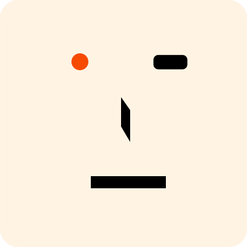

A self-hosted personal microblog where your timeline can be shared, discussed, and fully owned — built as a single Go binary you run on your own server.
Tools like Memos are great for capturing private thoughts. Ech0 is built for what comes next: publishing those ideas as a personal timeline that others can follow, comment on, and subscribe to via RSS.
It is social-lite, not a social network — and the server is yours.
"Lightweight, easy to deploy, and fully open-source — your microblog, on your terms." — README
Ech0 is honest about what it is. Here's where it earns its keep — and where another tool will serve you better.
Six things that ship in the box. Plus i18n, PWA, dark mode, TUI client and webhooks.
One container, no runtime deps. Linux, Windows, ARM (Raspberry Pi). Backups are a copy of one folder.
markdown-it engine with live preview and plugins. Fast tag filtering across the whole timeline.
Built-in comment system and RSS feed. Social-lite interaction, your moderation rules.
Unified storage layer. Mount local disk and S3-compatible buckets together, swap any time.
SSO out of the box. Passwordless sign-in via biometrics or hardware keys.
Built-in MCP server exposes posts, files and stats to your AI workflow over Streamable HTTP.
No database to provision. No build step. Pull the image, mount a folder, set a secret. That's it.
docker run -d \ --name ech0 \ -p 6277:6277 \ -v /opt/ech0/data:/app/data \ -e JWT_SECRET="Hello Echos" \ sn0wl1n/ech0:latest # then open http://<your-ip>:6277
One command, sixty seconds, done.
It auto-promotes to Owner.
RSS, comments, MCP — all on by default.
Open source, no tracking, no subscription, no SaaS lock-in. If it earns a place on your server, leave a star — that's how the project finds its next reader.